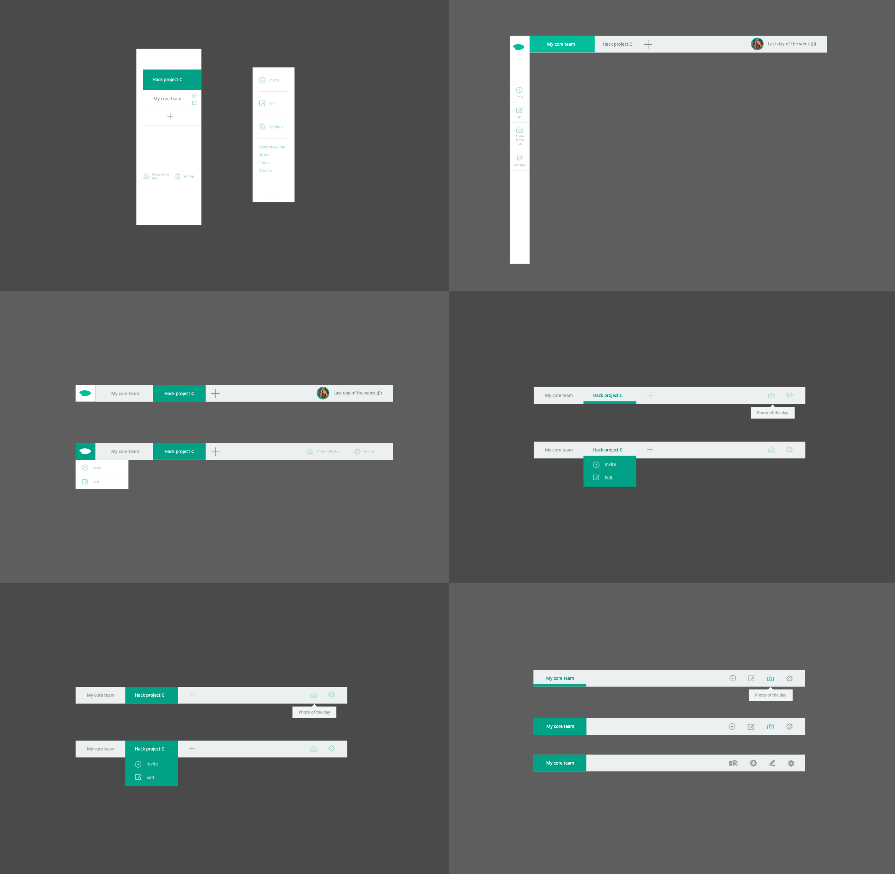
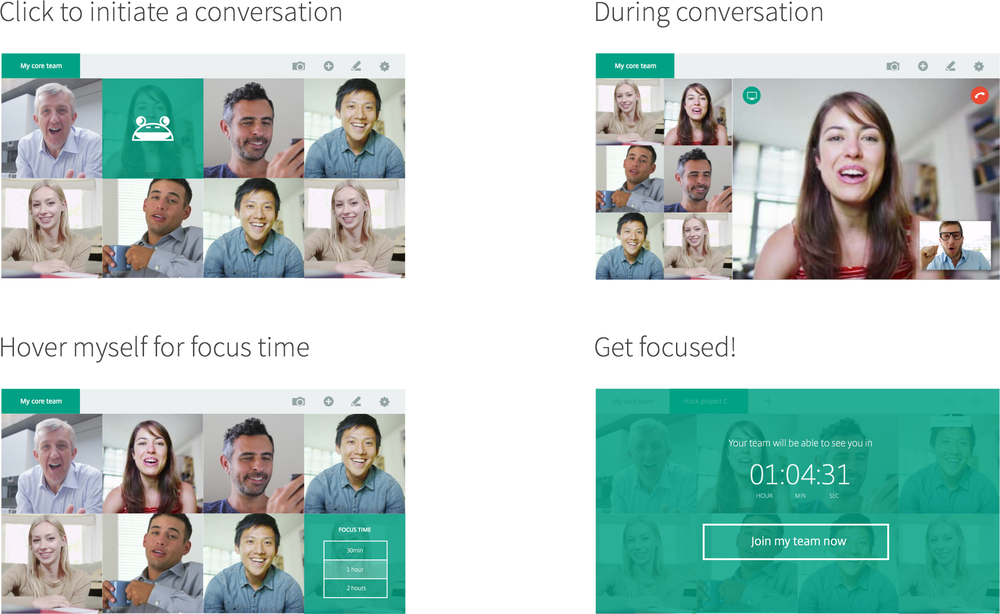

May 4 - 7, 2015.
Citrix's four-day hack week project. We won best presentation award & people's choice award, and got selected to Citrix's lean innovative program.
Competitive Analysis
Stakeholders Interviews
Focus Group
Prototyping
Iterative Design
Research
Design
Shervin Shaikh (Research Engineer)
We have an idea that will enable remote workers communicate more oftenly and casually, and ease the flow of setting up a meeting.
We started brainstorming and reseaching on existing products. Some startup have already taken a stab at it, and there are products out there that can stream live video or take photos of the user. They are great products, and the ideas are very close to what we wanted to build. But why are they not widely used?
After looking at the competitors, we decided to try out the idea of an always-on-video, and starts from there. It enables frictionless communication for remote and distributed teams by recreating the "tap on the shoulder" experience that occurs within the physical workplace. On top of that, we think it's necessary to narrow down the scope and use case, so that it really brings value to users. We believe we can do a better job.
I quickly made a working prototype. I wanted to bring it to customers to validate the idea and further specify the scope.
During the customer panel, we talked to 7 people from IT companies in the town. They loved this idea. As expected, concerns over privacy and micromanagement were brought up.
Challenges
What we changed / features
We want the UI to be clean, elegant, but still able to incorporate unique features that defines what Croak is. As for navigation, I explored one vertial/fat navigation sidebar, one header navbar + one vertical tool bar, until finally, a simple one header navbar. As for user profile, I went through from having a static profile pic to using your video feed/photo of the day as a standard profile pic. When it comes to simplifying the navbar, it went from having a dropdown menu to one single bar that still contains all functions which saves user a click...

Paper Prototyping
Axure
Sketch 3